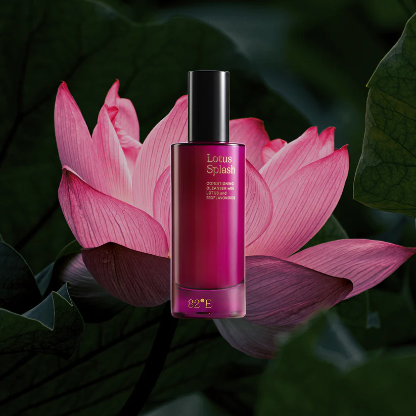
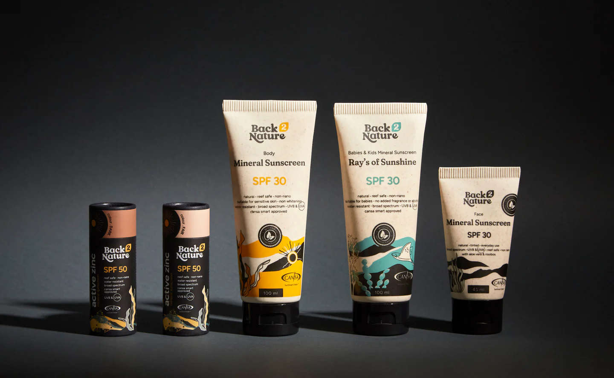
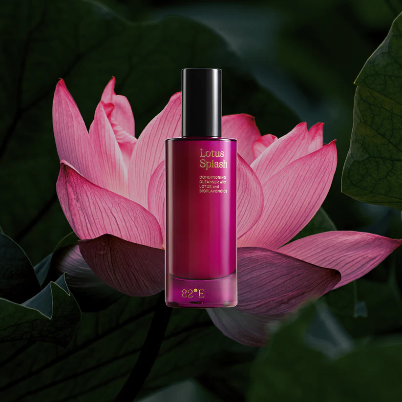
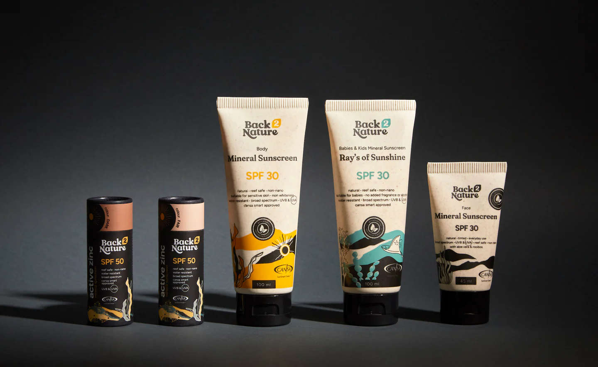
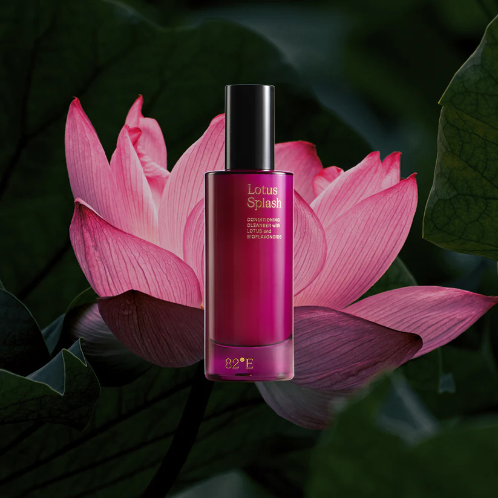
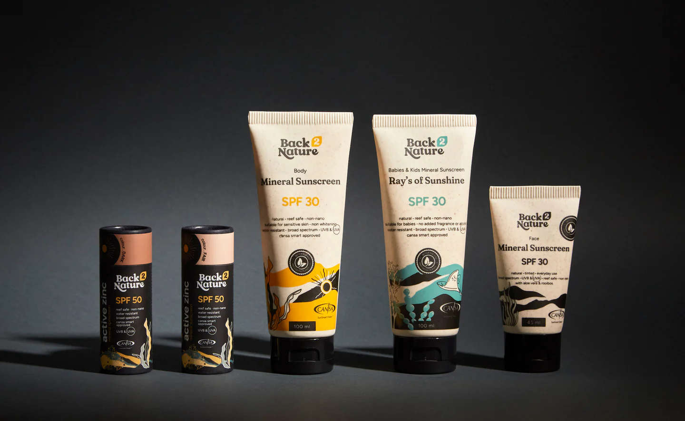

>>>>>>>>>>>>WE SELL<<<<<<<<<<<<<<
Blush: Adding a Healthy Flush
Eyeshadow: Adding Depth and Dimension
Eyeliner: Defining Your Eyes
Mascara: Lengthening and Thickening Lashes
Lipstick/Lip Gloss: Adding Color and Moisture
Compact Powder/Spray: Locking in Your Look
Highlighter: Enhancing Your Features
Makeup Brushes and Sponges: Tools for Seamless Application


Skin care
The purpose here is to clean the skin,
improve its basic quality, and prepare it for the application of make-up.
Products are of these types:
Cleansers, used to remove make-up and clean the skin.
Toners, used to remove oil from the skin and close the pores on the skin.
Moisturizers, used to make the skin soft and to reduce evaporation of water from the skin.
Primers, used to prepare the surface for the later application of make-up.
Concealers, to mask flaws or slightly modify the colour of the skin.
Foundation, a product which holds face-powder in place.
More generally, it create an even, uniform colour, covers flaws and adjusts the natural skintone.
Make-up
These are the cosmetics which the viewer actually sees on the face (or other parts of the body).
They are some or all of these:
Rouge or blusher:
talcum-based reddish powder, to give a more youthful appearance.
Used mainly to emphasize the cheekbones, sometimes to redden the cheeks. Very ancient, used by the ancient Egyptians.
Face powder.
Or translucent powder applied with a powder puff, brush or sponge, it comes in all shades to match skin.
Lipstick.
 


